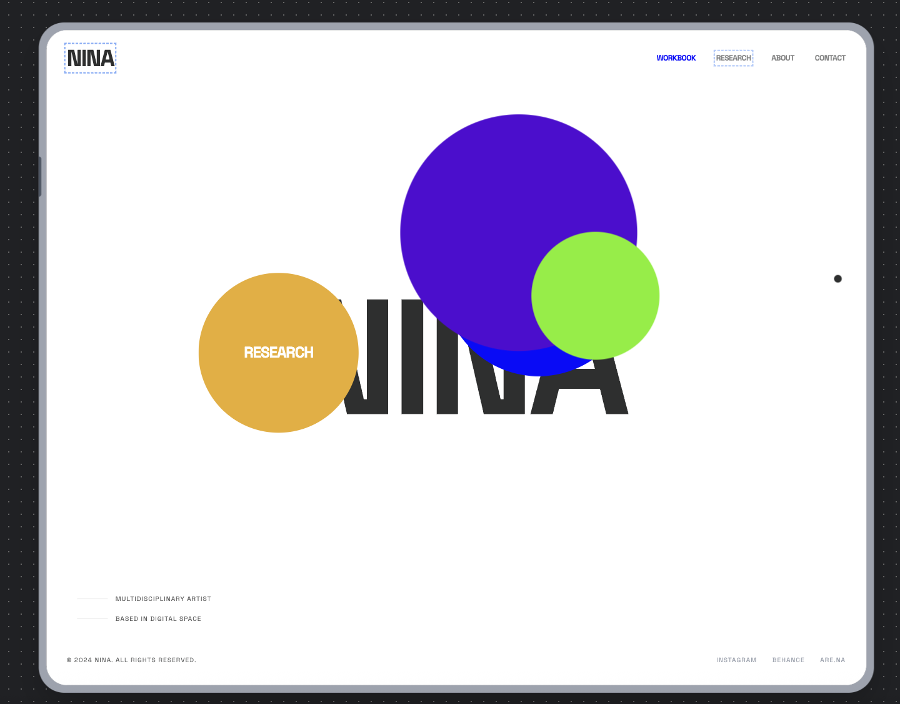
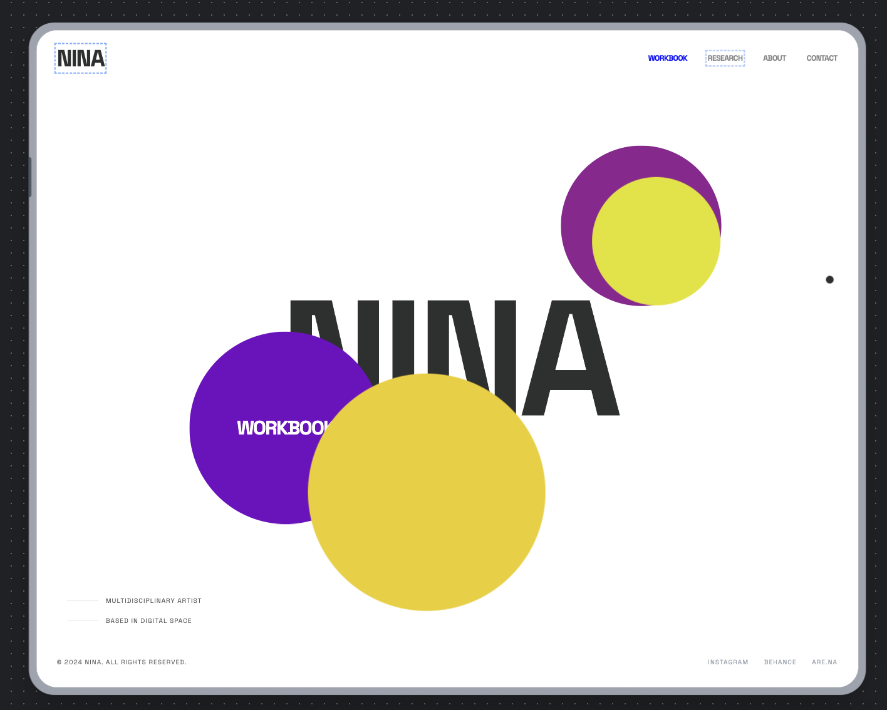
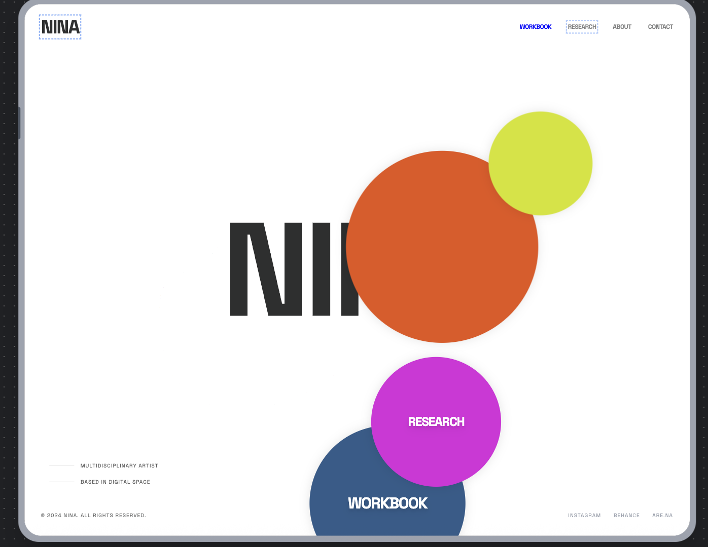
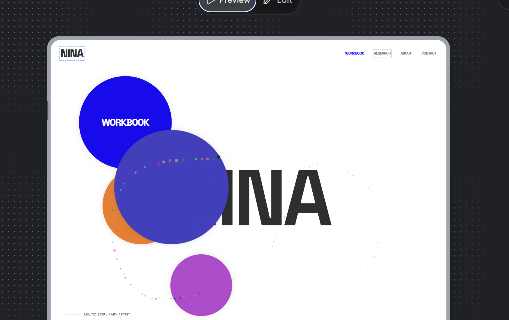
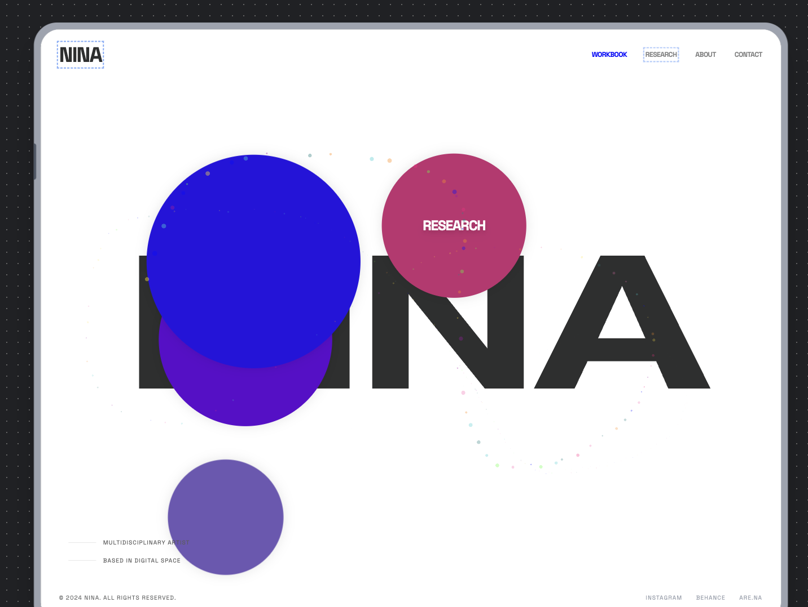
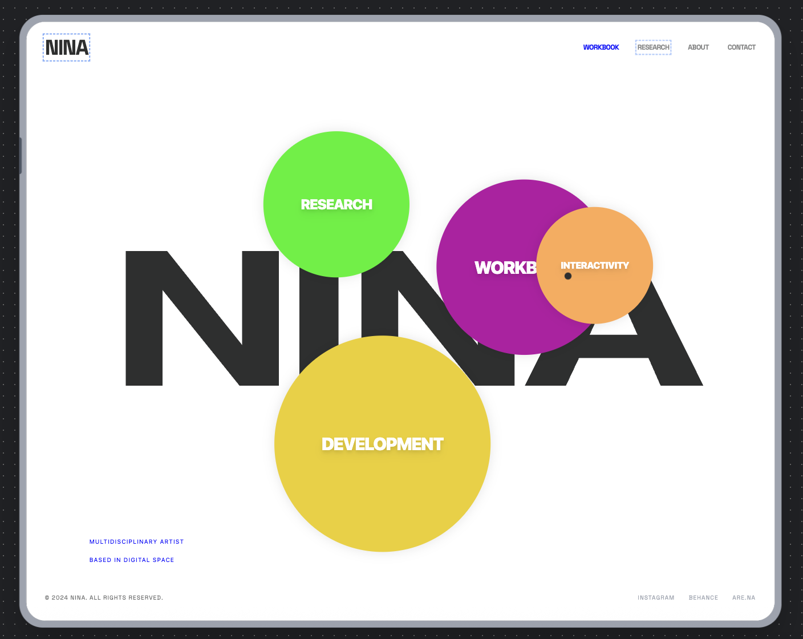

I liked all the ideas I came up with but I didn't want a workbook with a hand drawn aesthetic, so I decided against the more fun house and pizza ideas and played with the orb and letter based concepts.
I unintentionally live a pretty analog life. Gas in the house, no social media, a refusal to tap on my myki, wired headphones. So this was as comprehensive as I could be.
The wireframe is quite removed from my final design as I had not yet settled on a final design concept. However some elements I carried through. The designed cursor, and the horizontal scroll to see the different images on my pages.


This was a fun excercise as for someone with no coding experience, I saw possibilities which were otherwise out of reach for someone like me. I had put in a pretty detailed prompt from the beginning so it was easy to get results I expected. Here is the page I made with Stitch. It used to have the floating particles cursor I'm not sure where that went. However, this was where I picked up the code for my own cursor design (which I go further into in my Development page)







